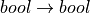
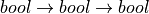
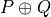

8. Boolean Algebra¶
As a first stepping stone toward a deeper exploration of deductive logic, we explore the related notion of Boolean algebra. Boolean algebra is a mathematical framework for representing and reasoning about truth.
This algebra is akin to ordinary high school algebra, and as such,
deals with values, operators, and the syntax and the evaluation of
expressions involving values and operators. However, the values in
Boolean algebra are limited to the two values in the set,  . They are often written instead as false and true,
respectively. And rather than arithmetic operators such as numeric
negation, addition, and subtraction, Boolean algebra defines a set of
Boolean operators. They are typically given names such as and,
or, and not, and they both operate on and yield Boolean values.
. They are often written instead as false and true,
respectively. And rather than arithmetic operators such as numeric
negation, addition, and subtraction, Boolean algebra defines a set of
Boolean operators. They are typically given names such as and,
or, and not, and they both operate on and yield Boolean values.
In this chapter, we first discuss Boolean algebra in programming, a setting with which the reader is already familar, baesd on a first course in programming. We then take a deeper look at the syntax and semantics of expressions in Boolean algebra. We do this by seeing how to use inductive definitions and recursive functions in the Dafny language to implement an inductive data type for representing Boolean expressions and a recursive evaluation function that when given any Boolean expression tells whether it is true or false.
Boolean Algebra in Dafny¶
All general-purpose programming languages support Boolean algebra. Dafny does so through its bool data type and the operators associated with it. Having taking a programming course, you will already have been exposed to all of the important ideas. In Dafny, as in many languages, the Boolean values are called true and false (rather than 1 and 0).
The Boolean operators are also denoted not by words, such as or and not but by math-like operators. For example, ! is the not operator and || is the or operator.
Here’s a (useless) Dafny method that illustrates how Boolean values and operators can be used in Dafny. It presents a method, BoolOps, that takes a Boolean value and returns one. The commands within the method body illustrate the use of Boolean constant (literal) values and the unary and binary operators provided by the Dafny language.
method BoolOps(a: bool) returns (r: bool)
{
var t: bool := true; // explicit type declaration
var f := false; // type inferred automatically
var not := !t; // negation
var conj := t && f; // conjunction, short-circuit evaluation
var disj := t || f; // disjunction, short-circuit (sc) evaluation
var impl := t ==> f; // implication, right associative, sc from left
var foll := t <== f; // follows, left associative, sc from right
var equv := t <==> t; // iff, bi-implication
return true; // returning a Boolean value
}
The first line assigns the Boolean constant, true, to a Boolean variable, t, that is explicitly declared to be of type,, bool. The second line assigns the Boolean constant, false, to f, and allows Dafny to infer that the type of f must be bool, based on the type of value being assigned to it. The third line illustrates the use of the negation operator, denoted as ! in Dafny. Here the negation of t is assigned to the new Boolean variable, not. The next line illustrates the use of the Boolean and, or conjunction operator (&&). Next is the Boolean or, or disjunction, operator, (||). These should all be familiar.
Implication (==>) is a binary operator (taking two Boolean values) that is read as implies and that evaluates to false only when the first argument is true and the second one is false, and that evaluates to true otherwise. The follows operator (<==) swaps the order of the arguments, and evaluates to false if the first argument is false and the second is true, and evaluates to true otherwise. Finally, the equivalence operator evaluates to true if both arguments have the same Boolean value, and evaluates to false otherwise. These operators are especially useful in writing assertions in Dafny.
The last line returns the Boolean value true as the result of running this method. Other operations built into Dafny also return Boolean values. Arithmetic comparison operators, such as <, are examples. The less than operator, for example, takes two numerical arguments and returns true if the first is strictly less than the second, otherwise it returns false.
Boolean Values¶
Boolean algebra is an algebra, which is a set of values and of operations that take and return these values. The set of values in Boolean algebra, is just the set containing 0 and 1.

In English that expression just gave a name that we can use, bool, to the set containing the values, 0 and 1. Although these values are written as if they were small natural numbers, you must think of them as elements of a different type. They aren’t natural numbers but simply the two values in this other, Boolean, algebra. We could use different symbols to represent these values. In fact, they are often written instead as false (for 0) and true (for 1).The exact symbols we use to represent these values don’t really matter. What really makes Boolean algebra what it is are the operators defined by Boolean algebra and how they behave.
Boolean Operators¶
An algebra, again, is a set of values of a particular kind and a set of operators involving that kind of value. Having introduced the set of two values of the Boolean type, let’s turn to the operations of Boolean algebra.
Nullary, Unary, Binary, and n-Ary Operators¶
The operations of an algebra take zero or more values and return (or reduce to) values of the same kind. Boolean operators, for example, take zero or more Boolean values and reduce to Boolean values. An operator that takes no values (and nevertheless returns a value, as all operators do) is called a constant. Each value in the value set of an algebra can be though of as an operator that takes no values.
Such an operator is also called nullary. An operator that takes one value is called unary; one that takes two, binary, and in general, one that takes n arguments is called n-ary (pronounced “EN-airy”).
Having already introduced the constant (nullary) values of Boolean algebra, each of the type we have called bool, we now introduce the types and behaviors the unary and binary Boolean operators, including each of those supported in Dafny.
The Unary Operators of Boolean Algebra¶
While there are two constants in Boolean algebra, each of type bool,
there are four unary operators, each of type  . This type, which contains an arrow, is a function type. It is
the type of any function that first takes an argument of type bool
then reduces to a value of type bool. It’s easier to read, write,
and say in math than in English. In math, the type would be prounced
as “bool to bool.”
. This type, which contains an arrow, is a function type. It is
the type of any function that first takes an argument of type bool
then reduces to a value of type bool. It’s easier to read, write,
and say in math than in English. In math, the type would be prounced
as “bool to bool.”
There is more than one value of this function type. For example one such function takes any bool argument and always returns the other one. This function is of type “bool to bool”, but it is not the same as the function that takes any bool argument and always returns the same value that it got. The type of each function is , but the function values are different.
In the programming field, the type of a function is given when it name, its arguments, and return values are declared. This part of a function definition is sometimes called the function signature, but it’s just as well to think of it as decaring the function type. The body of the function, usually a sequence of commands enclosed in curly braces, describes its actual behavior, the particular function value associated with the given function name and type.
We know that there is more than one unary Boolean function. So how many are there? To specify the behavior of an operator completely, we have to define what result it returns for each possible combination of its argument values. A unary operator takes only one argument (of the given type). In Boolean algebra, a unary function can thus take one of only two possible values; and it can return only one of two possible result values. The answer to the question is just the number of ways that a function can map two argument values to two result values.
And the answer to this question is four. A function can map both 0 and 1 to 0; both 0 and 1 to 1; 0 to 0 and 1 to 1; and 0 to 1 and 1 to 0. There are no other possibilities. An easy-to-understand way to graphically represent the behavior of each of these operations is with a truth table.
The rows of a truth table depict all possible combinations of argument values in the columns to the left, and in the last column on the right a truth tables presents the corresponding resulting value. The column headers give names to the argument values and results column headers present expressions using mathematical logic notations that represent how the resulting values are computed.
Constant False¶
Here then is a truth table for what we will call the constant_false operator, which takes a Boolean argument, either true or false, and always returns false. In our truth tables, we use the symbols, true and false, instead of 1 and 0, for consistency with the symbols that most programming languages, including Dafny, use for the Boolean constants.
 |
 |
|---|---|
| true | false |
| false | false |

Identity Function(s)¶
The Boolean identity function takes one Boolean value as an argument and returns that value, whichever it was.
|
|
|---|---|
| true | true |
| false | false |
As an aside we will note that identity functions taking any type of
value are functions that always return exactly the value they took as
an argument. What we want to say is that “for any type, T, and any
value, t of that type, the identity function for type T applied to
t always returns t itself. In mathematical logical notation,
 It’s clearer in
mathematical language than in English! Make sure that both make sense
to you now. That is the end of our aside. Now back to Boolean algebra.
It’s clearer in
mathematical language than in English! Make sure that both make sense
to you now. That is the end of our aside. Now back to Boolean algebra.
Negation¶
The Boolean negation, or not, operator, is the last of the four unary operators on Boolean values. It returns the value that it was not given as an argument. If given true, it evaluates to false, and if given false, to true.
The truth table makes this behavior clear. It also introduces the
standard notation in mathematical logic for the negation operator,
 . This expression is pronounced, not P. It evaluates
to true if P is false, and to false if P is true.
. This expression is pronounced, not P. It evaluates
to true if P is false, and to false if P is true.
|
|
|---|---|
| true | false |
| false | true |
Binary Boolean Operators¶
Now let’s consider the binary operators of Boolean algebra. Each takes two Boolean arguments and returns a Boolean value as a result. The type of each such function is written , pronounced “bool to bool to bool.” A truth table for a binary Boolean operator will have two columns for arguments, and one on the right for the result of applying the operator being defined to the argument values in the left two columns.
Because binary Boolean operators take two arguments, each with two possible values, there is a total of four possible combinations of argument values: true and true, true and false, false and true, and false and false. A truth table for a binary operator will thus have four rows.
The rightmost column of a truth table for an operator is really where the action is. It defines what result is returned for each combination of argument values. In a table with four rows, there will be four cells to fill in the final column. In a Boolean algebra there are two ways to fill each cell. And there are exactly 12^4 = 6 ways to do that. We can write them as 0000, 0001, 0010, 0011, 0100, 0101, 0110, 0111, 1000, 1001, 1010, 1011, 1100, 1101, 1110, 1111. There are thus exactly 16 total binary operators in Boolean algebra.
Mathematicians have given names to all 16, but in practice we tend to use just a few of them. They are called and, or, and not. The rest can be expressed as combinations these operators. It is common in computer science also to use binary operations called nand (for not and), xor (for exclusive or) and implies. Here we present truth tables for each of the binary Boolean operators in Dafny.
And (conjunction)¶
The and operator in Boolean algebra takes two Boolean arguments and returns true when both arguments are true, and otherwise, false.
|
 |
 |
|---|---|---|
| true | true | true |
| true | false | false |
| false | true | false |
| false | false | false |
Nand (not and)¶
The nand operator, short for not and, returns the opposite value from the and operator: false if both arguments are true and true otherwise.
|
|
 |
|---|---|---|
| true | true | false |
| true | false | true |
| false | true | true |
| false | false | true |
As an aside, the nand operator is especially important for designers of digital logic circuits. The reason is that every binary Boolean operator can be simulated by composing nand operations in certain patterns. So if we have a billion tiny nand circuits (each with two electrical inputs and an output that is off only when both inputs are on), then all we have to do is connect all these little ciruits up in the right patterns to implement very complex Boolean functions. The capability to etch billions of tiny nand circuits in silicon and to connect them in complex ways is the heart of the computer revolution. Now back to Boolean algebra.
Or (disjunction)¶
The or, or disjunction, operator evaluates to false only if both arguments are false, and otherwise to true.
It’s important to note that it evaluates to true if either one or both of its arguments are true. When a dad says to his child, “You can have a candy bar or a donut, he likely doesn’t mean *or in the sense of disjunction. Otherwise the child well educated in logic would surely say, “Thank you, Dad, I’ll greatly enjoy having both.”
|
|
 |
|---|---|---|
| true | true | true |
| true | false | true |
| false | true | true |
| false | false | false |
Xor (exclusive or)¶
What the dad most likely meant by or is what in Boolean algebra we call exclusive or, written as xor. It evalutes to true if either one, but not both, of its arguments is true, and to false otherwise.
|
|
 |
|---|---|---|
| true | true | false |
| true | false | true |
| false | true | true |
| false | false | false |
Nor (not or)¶
The nor operator returns the negation of what the or operator applied to the same arguments returns: xor(b1,b2) = not(or(b1, b2)). As an aside, like nand, the nor operator is universal, in the sense that it can be composed to with itself in different patterns to simulate the effects of any other binary Boolean operator.
|
|
 |
|---|---|---|
| true | true | false |
| true | false | false |
| false | true | false |
| false | false | true |
Implies¶
The implies operator is used to express the idea that if one condition, a premise, is true, another one, the conclusion, must be. So this operator returns true when both arguments are true. If the first argument is false, this operator returns true. It returns false only in the case where the first argument is true and the second is not, because that violates the idea that if the first is true then the second must be.
|
|
 |
|---|---|---|
| true | true | true |
| true | false | false |
| false | true | true |
| false | false | true |
Follows¶
The follows operator reverses the sense of an implication. Rather than being understood to say that truth of the first argument should lead to the truth of the second, it says that the truth of the first should follow from the truth of the second.
|
|
 |
|---|---|---|
| true | true | true |
| true | false | true |
| false | true | false |
| false | false | true |
There are other binary Boolean operators. They even have names, though one rarely sees these names used in practice.
A Ternary Binary Operator¶
We can of course define Boolean operators of any arity. As just one example, we introduce a ternary (3-ary) Boolean operator. It takes three Boolean values as arguments and returns a Boolean result. It’s type is thus ::bool rightarrow bool rightarrow bool rightarrow bool. We will call it ifThenElse_{bool}.
The way this operator works is that the value of the first argument determines which of the next two arguments values the function will return. If the first argument is true then the value of the whole expression is the value of the second argument, otherwise it is the value of the third. So, for example, ifThenElse_{bool}(true, true, false) evaluates to true, while ifThenElse_{bool}(false, true, false) is false.
It is sometimes helpful to write Boolean expressions involving n-ary operators for n>1 using something other than function application (prefix) notation. So, rather than and(true,false), with the operator in front of the arguments (prefix notation), we would typically write true && false to mean the same thing. We have first sed a symbol, &&, instead of the English word, and to name the operator of interest. We have also put the function name (now &&) between the arguments rather than in front of them. This is called infix notation.
With ternary and other operators, it can even make sense to break up the name of the operator and spread its parts across the whole expression. For example, instead of writing, ifThenElse_{bool}(true, true, false), we could write it as IF true THEN true ELSE false. Here, the capitalized words all together represent the name of the function applied to the three Boolean arguments in the expression.
As an aside, when we use infix notation, we have to do some extra work, namely to specify the order of operations, so that when we write expressions, the meaning is unambiguous. We have to say which operators have higher and lower precedence, and whether operators are left, right, or not associative. In everyday arithmetic, for example, multiplication has higher precedence than addition, so the expression 3 + 4 * 5 is read as 3 + (4 * 5) even though the + operator comes first in the expression.
Exercise: How many ternary Boolean operations are there? Hint: for an
operator with n Boolean arguments there are  combinations
of input values. This means that there will be rows in its
truth table, and so blanks to fill in with Boolean values
in the right column. How many ways are there to fill in
Boolean values? Express your answer in terms of n.
combinations
of input values. This means that there will be rows in its
truth table, and so blanks to fill in with Boolean values
in the right column. How many ways are there to fill in
Boolean values? Express your answer in terms of n.
Exercise: Write down the truth table for our Boolean if-then-else operator.
Formal Languages: Syntax and Semantics¶
Any introduction to programming will have made it clear that there is an infinite set of Boolean expressions. For example, in Dafny, true is a Boolean expression; so are false, true || false, (true || false) && (!false), and one could keep going on forever.
Boolean expressions, as we see here, are a different kind of thing than Boolean values. There are only two Boolean values, but there is an infinity of Boolean expressions. The connection is that each such expression has a corresponding Boolean truth value. For example, the expression, (true || false) && (!false) has the value, true.
The set of valid Boolean expressions is defined by the syntax of the Boolean expression language. The sequence of symbols, (true || false) && (!false), is a valid expression in the language, for example, but )( true false()||) false !&& is not, just as the sequence of words, “Mary works long hours” is a valid sentence in the English language, but “long works hours Mary” isn’t.
The syntax of a language defines the set of valid sentences in the language. The semantics of a language gives a meaning to each valid sentence in the language. In the case of Boolean expressions, the meaning given to each valid “sentence” (expression) is simply the Boolean value that that expression reduces to.
In the rest of this chapter, we use the case of Boolean expressions to introduce the concepts of the syntax and the semantics of formal languages. The syntax of a formal language precisely defines a set of expressions (sometimes called sentences or formulae). A semantics associates a meaning, in the form of a value, with each expression in the language.
The Syntax of Boolean Expressions: Inductive Definitions¶
As an example of syntax, the true, in the statement, var b := true; is a valid expression in the language of Boolean expressions, as defined by the syntaxt of this language. The semantics of the language associates the Boolean value, true, with this expression.
You probably just noticed that we used the same symbol, true, for both an expression and a value, blurring the distinction between expressions and values. Expressions that directly represent values are called literal expressions. Many languages use the usual name for a value as a literal expression, and the semantics of the language then associate each such expression with its corresponding value.
In the semantics of practical formal languages, literal expressions are assigned the values that they name. So the expression, true, means the value, true, for example. Similarly, when 3 appears on the right side of an assignment/update statement, such as in x := 3, it is an expression, a literal expression, that when evaluated is taken to mean the natural number (that we usually represent as) 3.
As computer scientists interested in languages and meaning, we can make these concepts of syntax and semantics not only precisely clear but also runnable. So let’s get started.
The Syntax and Semantics of Simplified Boolean Expression Language¶
We start by considering a simplified language of Boolean expressions: one with only two literal expressions. To make it clear that they are not Boolean values but expressions, we will call them not true and false but bTrue and bFalse.
Syntax¶
We can represent the syntax of this language in Dafny using what we call an inductive data type definition. A data type defines a set of values. So what we need to define is a data type whose values are all and only the valid expressions in the language. The data type defines the syntax of the language.
In the current case, we need a type with only two values, each one of them representing a valid expression in our language. Here’s how we’d write it in Dafny.
datatype Bexp =
bTrue |
bFalse
The definition starts with the datatype keyword, followed by the name of the type being defined (Bexp, short for Boolean expression) then an equals sign, and finally a list of constructors separated by vertical bar characters. The constructors define the ways in which the values of the type (or terms) can be created. Each constructor has a and can take optional parameters. Here the names are bTrue and bFalse and neither takes any parameters.
The only values of an inductive type are those that can be built using the provided constructors. So the language that we have specified thus far has only two values, which we take to be the valid expressions in the language we are specifying, namely bTrue and bFalse. That is all there is to specifying the syntax of our simplified language of Boolean expressions.
Semantics¶
To give a preview of what is coming, we now specify a semantics for this language. Speaking informally, we want to associate, to each of the expressions, a correponding meaning in the form of a Boolean value. We do this by defining a function that takes an expression (a value of type bExp) as an argument and that returns the Boolean value that the semantics defines as the meaning of that expression. Here, we want a function that returns Dafny’s Boolean value true for the expression, bTrue, and the Boolean value false for bFalse.
Here’s how we can write this function in Dafny.
function method bEval(e: bExp): bool
{
match e
{
case bTrue => true
case bFalse => false
}
}
As a shorhand for Boolean semantic evaluator we call it bEval. It takes an expression (a value of type, bExp) and returns a Boolean value. The function implementation uses an important construct that is probably new to most readers: a match expression. What a match expression does is to: first determine how a value of an inductive type was buit, namely what constructor was used and what arguments were provided (if any) and then to compute a result for the case at hand.
The match expression starts with the match keyword followed by the variable naming the value being matched. Then within curly braces there is a case for each constructor for the type of that value. There are two constructors for the type, bExp, so there are two cases. Each case starts with the case keyword, then the name of a constructor followed by an argument list if the construtor took parameters. Neither constructor took any parameters, so there is no need to deal with parameters here. The left side thus determines how the value was constructed. Each case has an arrow, =>, that is followed by an expression that when evaluated yields the result for that case.
The code here can thus be read as saying, first look at the given expression, then determine if it was bTrue or bFalse. In the first case, return true. In the second case, return false. That is all there is to defining a semantics for this simple language.
The Syntax of a Complete Boolean Expression Language¶
The real language of Boolean expressions has many more than two valid expressions, of course. In Dafny’s Boolean expression sub-language, for example, one can write not only the literal expressions, true and false, but also expressions such as (true || false) && (not false).
There is an infinity of such expressions, because given any one or two valid expressions (starting with true and false) we can always build a bigger expression by combing the two given ones with a Boolean operator. No matter how complex expressions P and Q are, we can, for example, always form the even more complex expressions, !P, P && Q, and P || Q, among others.
How can we extend the syntax of our simplified language so that it specifies the infinity set of well formed expressions in the language of Boolean expressions? The answer is that we need to add some more cosntructors. In particular, for each Boolean operator (including and, or, and not), we need a a constructor that takes the right number of smaller expressions as arguments and the builds the right larger expression.
For example, if P and Q are arbitrary “smaller” expressions, we need a consructor to build the expression P and Q, a constructor to build the expression, P or Q, and one that can build the expressions not P and not Q. Here then is the induction: some constructors of the bExp type will take values of the very type we’re defining as parameters. And because we’ve defined some values as constants, we have some expressions to get started with. Here’s how we’d write the code in Dafny.
datatype bExp =
bTrue |
bFalse |
bNot (e: bExp) |
bAnd (e1: bExp, e2: bExp) |
bOr (e1: bExp, e2: bExp)
We’ve added three new constructors: one corresponding to each of the operator in Boolean algebra (to keep things simple, we’re dealing with only three of them here). We have named each constructor in a way that makes the connection to the corresponding operator clear.
We also see that these new constructors take parameters. The bNot constructor takes a “smaller” expression, e, and builds/returns the expression, bNot e, which we will interpret as not e, or, as we’d write it in Dafny, !e. Similarly, given expressions, e1 and e2, the bAnd and bOr operators construct the expressions bAnd(e1,e2) and bOr(e1,e2), respectively, representing e1 and e2 and e1 or e2, respectively, or, in Dafny syntax, e1 && e2 and e1 || e2.
An expression in our bExp language for the Dafny expression (true || false) and (not false)) would be written as bAnd( (bOr (bTrue, bFalse)), (bNot bFalse)). Writing complex expressions like this in a single line of code can get awkward, to we could also structure the code like this:
var T: bExp := bTrue;
var F: := bFalse;
var P: := bOr ( T, F );
var Q := bNot ( F );
var R := bAnd ( P, Q );
The Semantics of Boolean Expressions: Recursive Evaluation¶
The remaining question, then, is how to give meanings to each of the expressions in the infinite set of expressions that can be built by finite numbers of applications of the constructor of our extended bExp type? When we had only two values in the type, it was easy to write a function that returned the right meaning-value for each of the two cases. We can’t possibly write a separate case, though, for each of an infinite number of expressions. The solution lies again in the realm of recursive functions.
Such a function will simply do mechanically what you the reader would do if presented with a complex Boolean expression to evaluate. You first figure out what operator was applied to what smaller expression or expressions. You then evaluate those expressions to get values for them. And finally you apply the Boolean operator to those values to get a result.
Take the expression, (true || false) and (not false)), which in our language is expressed by the term, bAnd( (bOr (bTrue, bFalse)), (bNot bFalse)). First we identify the constructor that was used to build the expression In this case it’s the constructor corresponding to the and operator: && in the Dafny expression and the bAnd in our own expression language. What we then do depends on what case has occured.
In the case at hand, we are looking at the constructor for the and operator. It took two smaller expressions as arguments. To enable the precise expression of the return result, ew given temporary names to the argument values that were passed to the constructor. We can call them e1 and e2, for example. sub-expressions that the operator was applied to.
In this case, e1 would be (true || false) and e2 would be (not false). To compute the value of the whole expression, we then obtain Boolean values for each of e1 and e2 and then combine them using the Boolean and operator.
The secret is that we get the values for e1 and e2 by the very same means: recursively! Within the evaluation of the overall Boolean expression, we thus recursively evaluate the subexpressions. Let’s work through the recursive evaluation of e1. It was built using the bOr constructor. That constructor took two arguments, and they were, in this instance, the literal expressions, bTrue and bFalse. To obtain an overall result, we recursively evaluate each of these expressions and then combine the result using the Boolean or operator. Let’s look at the recursive evaluation of the bTrue expression. It just evaluates to the Boolean value, true with no further recursion, so we’re done with that. The bFalse evaluates to false. These two values are then combined using or resulting in a value of true for eq. A similarly recursive process produces the value, true, for e2. (Reason through the details yourself!) And finally the two Boolean values, true and true are combined using Boolean and, and a value for the overall expression is thus computed and returned.
Here’s the Dafny code.
function method bEval(e: bExp): (r: bool)
{
match e
{
case bTrue => true
case bFase => false
case bNot(e: bExp) => !bEval(e)
case bAnd(e1, e2) => bEval(e1) && bEval(e2)
case bOrEe1, e2) => bEval(e1) || bEval(e2)
}
}
This code extends our simpler example by adding three cases, one for each of the new constructor. These constructors took smaller expression values as arguments, so the corresponding cases have used parameter lists to temporarily give names (e1, e2, etc.) to the arguments that were given when the constructor was orginally used. These names are then used to write the expressions on the right sides of the arrows, to compute the final results.
These result-computing expressions use recursive evalation of the constitute subexpressions to obtain their meanings (actual Boolean values in Dafny) which they then combine using actual Dafny Boolean operators to produce final results.
The meaning (Boolean value) of any of the infinite number of Boolean expressions in the Boolean expression language defined by our syntax (or grammar) can be found by a simple application of our bEval function. To compute the value of R, above, for example, we just run bEval(R). For this R, this function will without any doubt return the intended result, true.
The Syntax and Semantics of Programming Languages¶
Syntax defines legal expressions. Semantics give each legal expression an associated meaning. The meanings of Boolean expressions are Boolean values. Using exactly the same ideas used here for Boolean expressions we could not only specify but compute with the syntax semantics of a language of arithmetic expressions.
Indeed, the same ideas apply to programming language. A programming language has a syntax. It defines the set of valid “programs” in that language. A programming language also has a semantics, It specifies what each such program means. However, th meaning of a program is not captured in a single value. Rather, it is expressed ina relation that explains how running the programs transforms any pre-execution state that satisfies the program preconditions into a post-execution state.